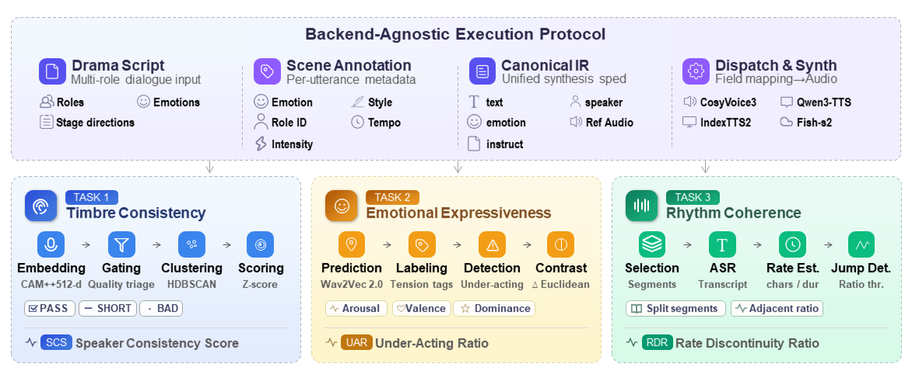

Project Page
SceneTTS-Bench: A Benchmark for Scene-Level TTS in Drama Dubbing
A bright, minimal project homepage for the paper, focused on the core idea first.
Abstract
Overview
Text-to-speech systems are increasingly used for drama dubbing, yet evaluation protocols remain sentence-level, leaving critical scene-level behaviors in multi-role dialogue insufficiently measured. We present SceneTTS-Bench, a benchmark that evaluates TTS along three complementary dimensions: timbre consistency across character turns, emotional expressiveness on dramatically pivotal lines, and rhythm coherence under segmented long-form synthesis. The benchmark corpus comprises both real-world drama scripts and programmatically generated scripts, totaling 200 bilingual scenes with approximately 12,000 utterances. A backend-agnostic execution protocol built on a Canonical Intermediate Representation ensures fair comparison across systems with heterogeneous conditioning interfaces. Three automatic pipelines produce per-utterance interpretable diagnostics: a clustering-based Speaker Consistency Score for voice-drift detection, a structured-supervision-driven Under-Acting Ratio for under-acting identification, and a group-wise Rate Discontinuity Ratio for rhythm-jump quantification. Experiments on four mainstream TTS backends show that each system exhibits distinct weaknesses along the three dimensions, and that findings hold consistently across both real and generated script subsets, confirming that scene-level evaluation surfaces failure modes invisible to conventional sentence-level metrics. Benchmark data, evaluation code, and diagnostic outputs are publicly released.
Main Figure
Paper Overview
